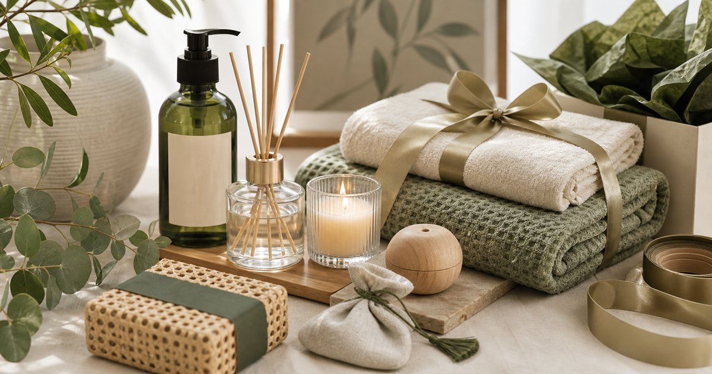

Elite Fashion｜香氛與身體保養送禮：精油、蠟燭、毛巾與生活小物怎麼搭
香氛與身體保養送禮要避開太私密、太濃烈或太難收納。用氣味濃度、毛巾觸感與生活小物的實用性，組出更耐看的禮物。

先判斷關係距離，避免太私密
香氛與身體保養送禮的第一步，是判斷你和對方的關係距離。越正式的關係，越適合低濃度、低侵入、容易轉送或共用的物件。
可以把 THANN、au fait 無非、MORINO、大檜仁心、蒔柒與 Awayuki 淡雪 放進同一個日常情境裡比較，但順序要放對。編輯部會先看使用頻率、清潔保存、是否適合出門攜帶、是否容易和既有用品搭配，而不是把保養或工具堆成越多越好。
比較穩妥的判斷是先確認 對方是否熟悉你的品味、是否能自然使用。常見失誤是 把太私人的香味或身體用品送給不熟的人；在 同事感謝、搬家禮、朋友生日與家人節慶 裡，能被穩定使用、容易收好、看得懂使用限制的品項，通常比一次買很多更實際。
- 正式關係可選毛巾、生活小物或低調香氛。
- 熟人再考慮更個人化的身體保養。
香氛要看空間大小和濃度
香氛禮物不應只看自己喜不喜歡。對方住處大小、是否有同住者、是否有寵物或幼兒，都會影響適不適合。
可以把 THANN、au fait 無非、大檜仁心與蒔柒 放進同一個日常情境裡比較，但順序要放對。編輯部會先看使用頻率、清潔保存、是否適合出門攜帶、是否容易和既有用品搭配，而不是把保養或工具堆成越多越好。
比較穩妥的判斷是先確認 氣味濃度、擺放位置、通風和對方生活習慣。常見失誤是 送了太強烈的味道，對方只能收起來不用；在 小宅、臥室、玄關與工作桌 裡，能被穩定使用、容易收好、看得懂使用限制的品項，通常比一次買很多更實際。
- 香氛送禮宜淡不宜濃。
- 不確定偏好時，選擇低調或小容量更穩。
毛巾和浴巾是低冒犯的質感禮
毛巾、浴巾或襪品類生活用品，適合在不知道對方氣味偏好時作為替代。它們實用、可替換，也比較不涉及私人喜好。
可以把 MORINO、Awayuki 淡雪、THANN 與 au fait 無非 放進同一個日常情境裡比較，但順序要放對。編輯部會先看使用頻率、清潔保存、是否適合出門攜帶、是否容易和既有用品搭配，而不是把保養或工具堆成越多越好。
比較穩妥的判斷是先確認 材質觸感、尺寸、清洗方式與包裝是否體面。常見失誤是 只追求香味驚喜，忽略對方可能不喜歡；在 搬家、住宿招待、家人節慶與辦公室小禮 裡，能被穩定使用、容易收好、看得懂使用限制的品項，通常比一次買很多更實際。
- 毛巾類禮物要看尺寸與洗滌方式。
- 可搭配小香氛或身體用品，但不要太滿。
身體保養適合熟人，不適合所有場合
身體保養品通常更接近個人使用，送給熟悉的人比較合適。若是商務或同事場合，可以改成毛巾、香氛小物或生活選物。
可以把 THANN、MORINO、au fait 無非與 Awayuki 淡雪 放進同一個日常情境裡比較，但順序要放對。編輯部會先看使用頻率、清潔保存、是否適合出門攜帶、是否容易和既有用品搭配，而不是把保養或工具堆成越多越好。
比較穩妥的判斷是先確認 對方是否會使用身體用品、是否有敏感或偏好。常見失誤是 把身體保養送給不熟的人，讓對方不知道如何回應；在 家人、親密朋友與熟悉同事 裡，能被穩定使用、容易收好、看得懂使用限制的品項，通常比一次買很多更實際。
- 熟人禮物可以更個人化。
- 正式場合保持中性與實用。
生活小物讓禮物更容易被放進家裡
香氛或保養若單獨送太私密，可以用生活小物平衡，例如毛巾、托盤、收納或日用品。這類物件能讓禮物更像生活提案，而不是單一味道。
可以把 Awayuki 淡雪、MORINO、大檜仁心、蒔柒與 THANN 放進同一個日常情境裡比較，但順序要放對。編輯部會先看使用頻率、清潔保存、是否適合出門攜帶、是否容易和既有用品搭配，而不是把保養或工具堆成越多越好。
比較穩妥的判斷是先確認 對方家裡是否有位置、物件是否容易收納。常見失誤是 把禮盒做得太大，對方拆開後不知道放哪裡；在 小宅生活、搬家禮與週末拜訪 裡，能被穩定使用、容易收好、看得懂使用限制的品項，通常比一次買很多更實際。
- 禮盒體積不要超過對方收納負擔。
- 生活小物要能單獨使用。
一份穩定香氛禮：一個主角，兩個輔助
香氛與身體保養禮物不需要塞滿。選一個主角，例如香氛、毛巾或身體用品，再搭配兩個輔助小物，就能保持完整又不過量。
可以把 THANN、au fait 無非、MORINO、大檜仁心、蒔柒與 Awayuki 淡雪 放進同一個日常情境裡比較，但順序要放對。編輯部會先看使用頻率、清潔保存、是否適合出門攜帶、是否容易和既有用品搭配，而不是把保養或工具堆成越多越好。
比較穩妥的判斷是先確認 主角是否明確、輔助是否真的有用。常見失誤是 每個品項都想放，最後禮盒失去重點；在 節慶、生日、拜訪與商務謝禮 裡，能被穩定使用、容易收好、看得懂使用限制的品項，通常比一次買很多更實際。
- 主角越清楚，禮物越耐看。
- 輔助小物不需要搶過主角。
FAQ
香氛適合送不太熟的人嗎？
可以，但建議選低調、小容量、容易擺放的形式，並避免太強烈或太私人化的味道。
身體保養品送禮會不會太私密？
視關係而定。熟人或家人較適合；正式關係可改選毛巾、生活小物或低調香氛。
香氛禮盒要放很多東西才體面嗎？
不需要。一個明確主角加上少量實用輔助，通常比塞滿更多品項更耐看。
下一步建議
如果你正在準備香氛或身體保養禮物，可以先用關係距離、氣味濃度與收納難度來篩選。
重要警語
本文為一般香氛、身體保養與生活用品送禮情境整理，不宣稱身體結果或空間變化。香氛與保養品請依個人狀況、空間條件與商品標示使用。
本文含品牌／商品導購連結；若你透過部分商品連結前往選購，Elite Fashion 可能取得合作收益。本文仍以編輯判斷與使用情境整理為主，價格、規格、活動與庫存請以商品頁公告為準。